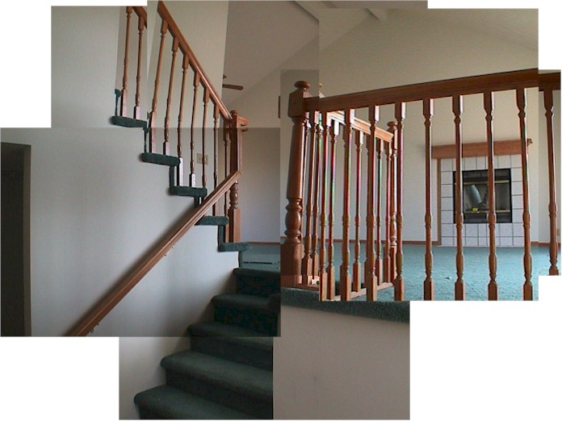
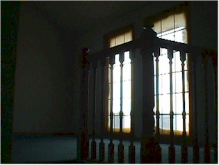
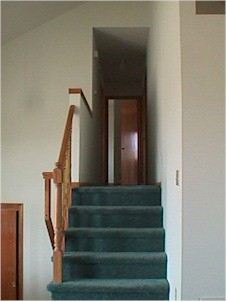

4-11-99
Here's a goofy managerie of photos taken by a camera that has no zooming
out ability of the view of the great room as you enter the front door.
My house'll have an octaganal window under the support beam you see
(twice) at the top middle (and middle right). Fancier fireplace, too.

The front windows of the great room. Hmmm... no apature settings on my
friend's digital camera.

...and a very tight-looking view of the steps to the bedrooms,
bathrooms. Wow. Those stairs look really small in that photo!
It's not that bad, really...
